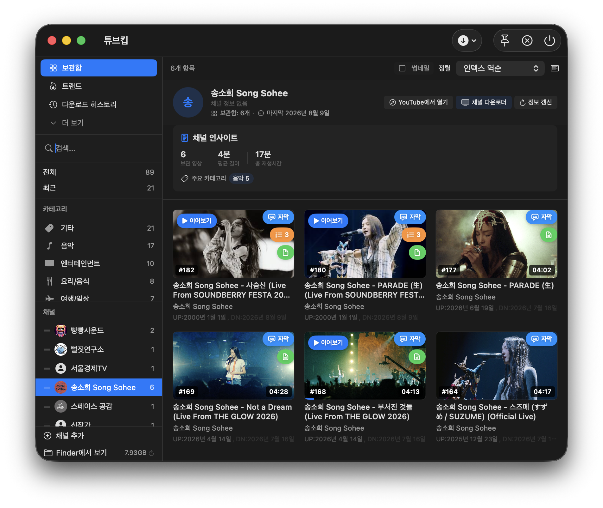
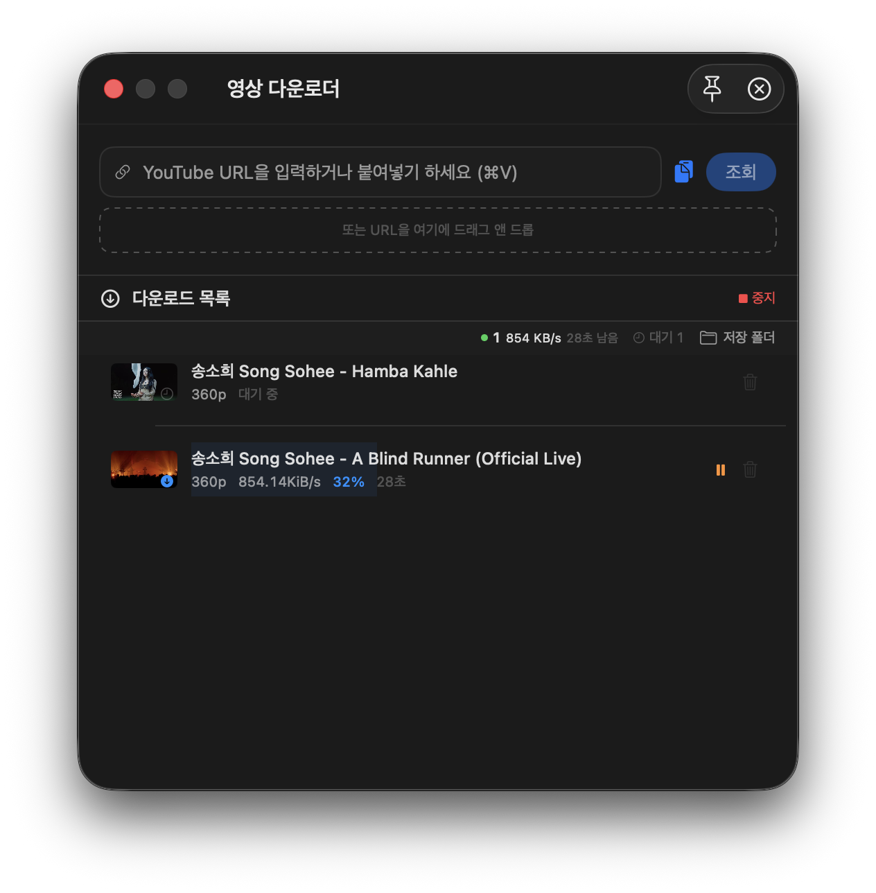
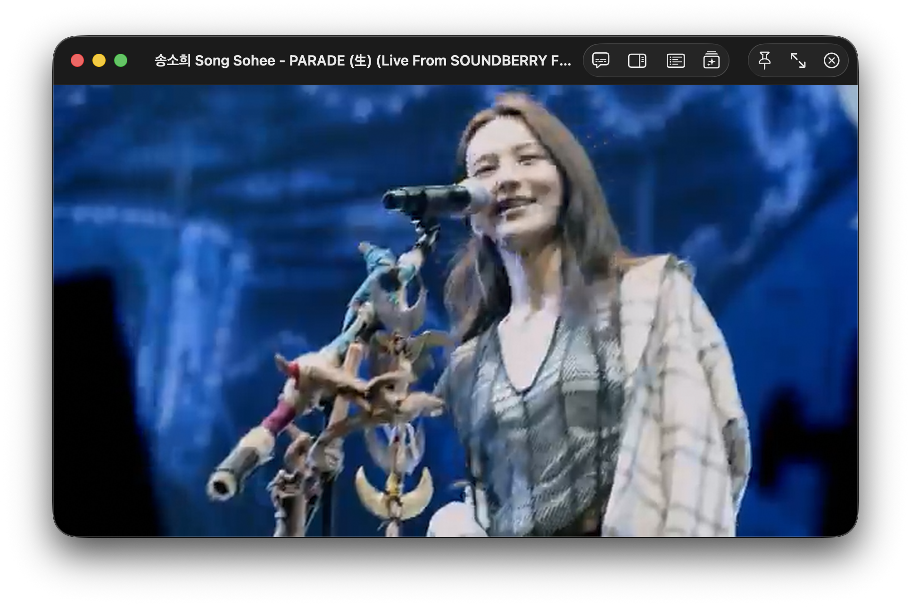

오프라인
내 라이브러리 YouTube · 오프라인 · AI
받고, 정리하고,
AI가 요약합니다.
YouTube 영상을 내 기기에 저장하고, 언제든 다시 봅니다. 자막으로 요약하고 챕터와 마인드맵까지 — 모든 처리는 로컬에서 이루어집니다.

인기 있는 오프라인 보관함
모두 보기 →
yt-dlpURL만 붙여넣으면, 큐로 바로

H.264자체 플레이어로 바로 재생
왜 TubeKeep인가
모두 보기 →다운로드는 큐가 전부 처리합니다
URL을 붙여넣거나 QR로 스캔하면 바로 대기열에 들어갑니다. 형식과 화질을 골라 받고, 실패해도 임시 파일을 보존해 다음에 이어받습니다.
네트워크 없이 그대로 재생합니다
H.264에 최적화된 자체 플레이어로 자막 오버레이와 이어보기를 지원합니다. 저장한 영상은 언제 어디서나 끊김 없이 재생됩니다.
AI가 정리해 줍니다
모두 보기 →AI 요약 · Q&A
자막 기반 핵심 요약과 챕터 분할. 영상에 대해 대화로 묻고, 마인드맵까지 그려줍니다.
AI 팟캐스트
자막을 두 사람의 자연스러운 대화형 팟캐스트로 변환해, 이동 중에도 귀로 들을 수 있습니다.
Whisper 자막
자막이 없는 영상도 로컬 음성 인식으로 자동 자막을 생성합니다. 네트워크가 없어도 동작합니다.
평생 무료.
당신의 기기 안에만 저장합니다.
모든 콘텐츠는 로컬에서 처리됩니다. AI 요약 · 자막 · 팟캐스트까지.